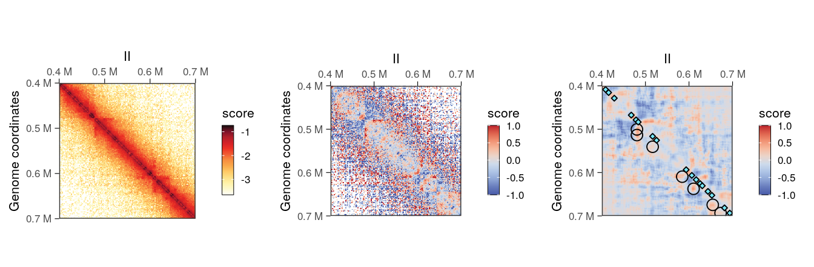

library(ggplot2)
library(GenomicRanges)
## Loading required package: stats4
## Loading required package: BiocGenerics
##
## Attaching package: 'BiocGenerics'
## The following objects are masked from 'package:stats':
##
## IQR, mad, sd, var, xtabs
## The following objects are masked from 'package:base':
##
## Filter, Find, Map, Position, Reduce, anyDuplicated, aperm,
## append, as.data.frame, basename, cbind, colnames, dirname,
## do.call, duplicated, eval, evalq, get, grep, grepl, intersect,
## is.unsorted, lapply, mapply, match, mget, order, paste, pmax,
## pmax.int, pmin, pmin.int, rank, rbind, rownames, sapply,
## setdiff, table, tapply, union, unique, unsplit, which.max,
## which.min
## Loading required package: S4Vectors
##
## Attaching package: 'S4Vectors'
## The following object is masked from 'package:utils':
##
## findMatches
## The following objects are masked from 'package:base':
##
## I, expand.grid, unname
## Loading required package: IRanges
## Loading required package: GenomeInfoDb
library(InteractionSet)
## Loading required package: SummarizedExperiment
## Loading required package: MatrixGenerics
## Loading required package: matrixStats
##
## Attaching package: 'MatrixGenerics'
## The following objects are masked from 'package:matrixStats':
##
## colAlls, colAnyNAs, colAnys, colAvgsPerRowSet, colCollapse,
## colCounts, colCummaxs, colCummins, colCumprods, colCumsums,
## colDiffs, colIQRDiffs, colIQRs, colLogSumExps, colMadDiffs,
## colMads, colMaxs, colMeans2, colMedians, colMins, colOrderStats,
## colProds, colQuantiles, colRanges, colRanks, colSdDiffs, colSds,
## colSums2, colTabulates, colVarDiffs, colVars, colWeightedMads,
## colWeightedMeans, colWeightedMedians, colWeightedSds,
## colWeightedVars, rowAlls, rowAnyNAs, rowAnys, rowAvgsPerColSet,
## rowCollapse, rowCounts, rowCummaxs, rowCummins, rowCumprods,
## rowCumsums, rowDiffs, rowIQRDiffs, rowIQRs, rowLogSumExps,
## rowMadDiffs, rowMads, rowMaxs, rowMeans2, rowMedians, rowMins,
## rowOrderStats, rowProds, rowQuantiles, rowRanges, rowRanks,
## rowSdDiffs, rowSds, rowSums2, rowTabulates, rowVarDiffs,
## rowVars, rowWeightedMads, rowWeightedMeans, rowWeightedMedians,
## rowWeightedSds, rowWeightedVars
## Loading required package: Biobase
## Welcome to Bioconductor
##
## Vignettes contain introductory material; view with
## 'browseVignettes()'. To cite Bioconductor, see
## 'citation("Biobase")', and for packages 'citation("pkgname")'.
##
## Attaching package: 'Biobase'
## The following object is masked from 'package:MatrixGenerics':
##
## rowMedians
## The following objects are masked from 'package:matrixStats':
##
## anyMissing, rowMedians
library(HiCExperiment)
## Consider using the `HiContacts` package to perform advanced genomic operations
## on `HiCExperiment` objects.
##
## Read "Orchestrating Hi-C analysis with Bioconductor" online book to learn more:
## https://js2264.github.io/OHCA/
##
## Attaching package: 'HiCExperiment'
## The following object is masked from 'package:SummarizedExperiment':
##
## metadata<-
## The following object is masked from 'package:S4Vectors':
##
## metadata<-
## The following object is masked from 'package:ggplot2':
##
## resolution
library(HiContactsData)
## Loading required package: ExperimentHub
## Loading required package: AnnotationHub
## Loading required package: BiocFileCache
## Loading required package: dbplyr
##
## Attaching package: 'AnnotationHub'
## The following object is masked from 'package:Biobase':
##
## cache
library(HiContacts)
## Registered S3 methods overwritten by 'readr':
## method from
## as.data.frame.spec_tbl_df vroom
## as_tibble.spec_tbl_df vroom
## format.col_spec vroom
## print.col_spec vroom
## print.collector vroom
## print.date_names vroom
## print.locale vroom
## str.col_spec vroom
library(rtracklayer)
##
## Attaching package: 'rtracklayer'
## The following object is masked from 'package:AnnotationHub':
##
## hubUrl5 Matrix-centric analysis
Pre-loading packages and objects üì¶
Aims
This chapter focuses on the various analytical tools offered by HiContacts to compute matrix-related metrics from a HiCExperiment object.
In the first part of this book, we have seen how to query parts or all of the data contained in Hi-C contact matrices using the HiCExperiment object (Chapter 2), how to manipulate HiCExperiment objects (Chapter 3) and how to visualize Hi-C contact matrices as heatmaps (Chapter 4).
The HiContacts package directly operates on HiCExperiment objects and extends its usability by providing a comprehensive toolkit to analyze Hi-C data, focusing on four main topics:
- Contact matrix-centric analyses (this chapter)
- Interactions-centric analyses (Chapter 6)
- Structural feature annotations (Chapter 7)
- Hi-C visualization (see previous chapter)
Matrix-centric analyses consider a HiCExperiment object from the “matrix” perspective to perform a range of matrix-based operations. This encompasses:
- Computing observed/expected (O/E) map
- Computing auto-correlation map
- Smoothing out a contact map
- Merging multiple Hi-C maps together
- Comparing two Hi-C maps to each other

Note
- All the functions described in this chapter are endomorphisms: they take
HiCExperimentobjects as input and return modifiedHiCExperimentobjects. - Internally, most of the functions presented in this chapter make a call to
as.matrix(<HiCExperiment>)to coerce it into amatrix.
Generating the example
hic object üëá
To demonstrate HiContacts functionalities, we will create an HiCExperiment object from an example .cool file provided in the HiContactsData package.
library(HiCExperiment)
library(HiContactsData)
# ---- This downloads an example `.mcool` file and caches it locally
coolf <- HiContactsData('yeast_wt', 'mcool')
## see ?HiContactsData and browseVignettes('HiContactsData') for documentation
## loading from cache
# ---- This creates a connection to the disk-stored `.mcool` file
cf <- CoolFile(coolf)
cf
## CoolFile object
## .mcool file: /root/.cache/R/ExperimentHub/f73da6b8a8_7752
## resolution: 1000
## pairs file:
## metadata(0):
# ---- This imports contacts from the chromosome `II` at resolution `2000`
hic <- import(cf, focus = 'II', resolution = 2000)hic
## `HiCExperiment` object with 471,364 contacts over 407 regions
## -------
## fileName: "/root/.cache/R/ExperimentHub/f73da6b8a8_7752"
## focus: "II"
## resolutions(5): 1000 2000 4000 8000 16000
## active resolution: 2000
## interactions: 34063
## scores(2): count balanced
## topologicalFeatures: compartments(0) borders(0) loops(0) viewpoints(0)
## pairsFile: N/A
## metadata(0):5.1 Operations in an individual matrix
5.1.1 Balancing a raw interaction count map
Hi-C sequencing coverage is systematically affected by multiple confounding factors, e.g. density of restriction sites, GC%, genome mappability, etc.. Overall, it generally ends up not homogenous throughout the entire genome and this leads to artifacts in un-normalized count matrices.
To correct for sequencing coverage heterogeneity of raw count maps, Hi-C data can be normalized using matrix balancing approaches (Cournac et al. (2012), Imakaev et al. (2012)). This is generally done directly on the disk-stored matrices using out-of-memory strategies (e.g. with cooler balance <.cool>). However, if contact matrix files are imported into a HiCExperiment object but no balanced scores are available, in-memory balancing can be performed using the normalize function. This adds an extra ICE element in scores list (while the interactions themselves are unmodified).
normalized_hic <- normalize(hic)
normalized_hic
## `HiCExperiment` object with 471,364 contacts over 407 regions
## -------
## fileName: "/root/.cache/R/ExperimentHub/f73da6b8a8_7752"
## focus: "II"
## resolutions(5): 1000 2000 4000 8000 16000
## active resolution: 2000
## interactions: 34063
## scores(3): count balanced ICE
## topologicalFeatures: compartments(0) borders(0) loops(0) viewpoints(0)
## pairsFile: N/A
## metadata(0):It is possible to plot the different scores of the resulting object to visualize the newly computed scores. In this example, ICE scores should be nearly identical to balanced scores, which were originally imported from the disk-stored contact matrix.
cowplot::plot_grid(
plotMatrix(normalized_hic, use.scores = 'count', caption = FALSE),
plotMatrix(normalized_hic, use.scores = 'balanced', caption = FALSE),
plotMatrix(normalized_hic, use.scores = 'ICE', caption = FALSE),
nrow = 1
)
5.1.2 Computing observed/expected (O/E) map
The most prominent feature of a balanced Hi-C matrix is the strong main diagonal. This main diagonal is observed because interactions between immediate adjacent genomic loci are more prone to happen than interactions spanning longer genomic distances. This “expected” behavior is due to the polymer nature of the chromosomes being studied, and can be locally estimated using the distance-dependent interaction frequency (a.k.a. the “distance law”, or P(s)). It can be used to compute an expected matrix on interactions.
When it is desirable to “mask” this polymer behavior to emphasize topological structures formed by chromosomes, one can divide a given balanced matrix by its expected matrix, i.e. calculate the observed/expected (O/E) map. This is sometimes called “detrending”, as it effectively removes the average polymer behavior from the balanced matrix.
The detrend function performs this operation on a given HiCExperiment object. It adds two extra elements in scores list: expected and detrended metrics (while the interactions themselves are unmodified).
detrended_hic <- detrend(hic)
detrended_hic
## `HiCExperiment` object with 471,364 contacts over 407 regions
## -------
## fileName: "/root/.cache/R/ExperimentHub/f73da6b8a8_7752"
## focus: "II"
## resolutions(5): 1000 2000 4000 8000 16000
## active resolution: 2000
## interactions: 34063
## scores(4): count balanced expected detrended
## topologicalFeatures: compartments(0) borders(0) loops(0) viewpoints(0)
## pairsFile: N/A
## metadata(0):Topological features will be visually more prominent in the O/E detrended Hi-C map.
cowplot::plot_grid(
plotMatrix(detrended_hic, use.scores = 'balanced', scale = 'log10', limits = c(-3.5, -1.2), caption = FALSE),
plotMatrix(detrended_hic, use.scores = 'expected', scale = 'log10', limits = c(-3.5, -1.2), caption = FALSE),
plotMatrix(detrended_hic, use.scores = 'detrended', scale = 'linear', limits = c(-1, 1), cmap = bwrColors(), caption = FALSE),
nrow = 1
)
Scale for
detrended scores
-
expectedscores are inlinearscale and ± in the same amplitude thanbalancedscores; -
detrendedscores are inlog2scale, in general approximately centered around 0. When plottingdetrendedscores,scale = linearshould be set to prevent the defaultlog10scaling.
5.1.4 Despeckling (smoothing out) a contact map
Shallow-sequenced Hi-C libraries or matrices binned with an overly small bin size sometimes produce “grainy” Hi-C maps with noisy backgrounds. A grainy map may also be obtained when dividing two matrices, e.g. when computing the O/E ratio with detrend. This is particularly true for sparser long-range interactions. To overcome such limitations, HiCExperiment objects can be “despeckled” to smooth out focal speckles.
hic2 <- detrend(hic['II:400000-700000'])
hic2 <- despeckle(hic2, use.scores = 'detrended', focal.size = 2)
hic2
## `HiCExperiment` object with 168,785 contacts over 150 regions
## -------
## fileName: "/root/.cache/R/ExperimentHub/f73da6b8a8_7752"
## focus: "II:400,000-700,000"
## resolutions(5): 1000 2000 4000 8000 16000
## active resolution: 2000
## interactions: 11325
## scores(5): count balanced expected detrended detrended.despeckled
## topologicalFeatures: compartments(0) borders(0) loops(0) viewpoints(0)
## pairsFile: N/A
## metadata(0):The added <use.scores>.despeckled scores correspond to scores averaged using a window, whose width is provided with the focal.size argument. This results in a smoother Hi-C heatmap, effectively removing the “speckles” observed at longer range.
library(InteractionSet)
loops <- system.file('extdata', 'S288C-loops.bedpe', package = 'HiCExperiment') |>
import() |>
makeGInteractionsFromGRangesPairs()
borders <- system.file('extdata', 'S288C-borders.bed', package = 'HiCExperiment') |>
import()
cowplot::plot_grid(
plotMatrix(hic2, caption = FALSE),
plotMatrix(hic2, use.scores = 'detrended', scale = 'linear', limits = c(-1, 1), caption = FALSE),
plotMatrix(
hic2,
use.scores = 'detrended.despeckled',
scale = 'linear',
limits = c(-1, 1),
caption = FALSE,
loops = loops,
borders = borders
),
nrow = 1
)
Scale for
despeckled scores
despeckled scores are in the same scale than the scores they were computed from.
5.2 Operations between multiple matrices
5.2.1 Merging maps
Hi-C libraries are often sequenced in multiple rounds, for example when high genome coverage is required. This results in multiple contact matrix files being generated. The merge function can be used to bind several HiCExperiment objects into a single one.
The different HiCExperiment objects do not need to all have identical regions, as shown in the following example.
hic_sub1 <- subsetByOverlaps(hic, GRanges("II:100001-200000"))
hic_sub2 <- subsetByOverlaps(hic, GRanges("II:300001-400000"))
bound_hic <- merge(hic_sub1, hic_sub2)
plotMatrix(bound_hic)5.2.2 Computing ratio between two maps
Comparing two Hi-C maps can be useful to infer which genomic loci are differentially interacting between experimental conditions. Comparing two HiCExperiment objects can be done in R using the divide function.
For example, we can divide the eco1 mutant Hi-C data by wild-type Hi-C dataset using the divide function.
hic_eco1 <- import(
CoolFile(HiContactsData('yeast_eco1', 'mcool')),
focus = 'II',
resolution = 2000
)
## see ?HiContactsData and browseVignettes('HiContactsData') for documentation
## loading from cachediv_contacts <- divide(hic_eco1, by = hic)
div_contacts
## `HiCExperiment` object with 996,154 contacts over 407 regions
## -------
## fileName: N/A
## focus: "II"
## resolutions(1): 2000
## active resolution: 2000
## interactions: 60894
## scores(6): count.x balanced.x count.by balanced.by balanced.fc balanced.l2fc
## topologicalFeatures: ()
## pairsFile: N/A
## metadata(2): hce_list operationWe can visually compare wild-type and eco1 maps side by side (left) and their ratio map (right). This highlights the depletion of short-range and increase of long-range interactions in the eco1 dataset.
cowplot::plot_grid(
plotMatrix(hic_eco1, compare.to = hic, limits = c(-4, -1)),
plotMatrix(
div_contacts,
use.scores = 'balanced.fc',
scale = 'log2',
limits = c(-1, 1),
cmap = bwrColors()
)
)Session info
Click to expand üëá
sessioninfo::session_info(include_base = TRUE)
## ─ Session info ────────────────────────────────────────────────────────────
## setting value
## version R Under development (unstable) (2024-01-17 r85813)
## os Ubuntu 22.04.3 LTS
## system x86_64, linux-gnu
## ui X11
## language (EN)
## collate C
## ctype en_US.UTF-8
## tz Etc/UTC
## date 2024-01-22
## pandoc 3.1.1 @ /usr/local/bin/ (via rmarkdown)
##
## ─ Packages ────────────────────────────────────────────────────────────────
## package * version date (UTC) lib source
## abind 1.4-5 2016-07-21 [2] CRAN (R 4.4.0)
## AnnotationDbi 1.65.2 2023-11-03 [2] Bioconductor
## AnnotationHub * 3.11.1 2023-12-11 [2] Bioconductor 3.19 (R 4.4.0)
## backports 1.4.1 2021-12-13 [2] CRAN (R 4.4.0)
## base * 4.4.0 2024-01-18 [3] local
## base64enc 0.1-3 2015-07-28 [2] CRAN (R 4.4.0)
## beeswarm 0.4.0 2021-06-01 [2] CRAN (R 4.4.0)
## Biobase * 2.63.0 2023-10-24 [2] Bioconductor
## BiocFileCache * 2.11.1 2023-10-26 [2] Bioconductor
## BiocGenerics * 0.49.1 2023-11-01 [2] Bioconductor
## BiocIO 1.13.0 2023-10-24 [2] Bioconductor
## BiocManager 1.30.22 2023-08-08 [2] CRAN (R 4.4.0)
## BiocParallel 1.37.0 2023-10-24 [2] Bioconductor
## BiocVersion 3.19.1 2023-10-26 [2] Bioconductor
## Biostrings 2.71.1 2023-10-25 [2] Bioconductor
## bit 4.0.5 2022-11-15 [2] CRAN (R 4.4.0)
## bit64 4.0.5 2020-08-30 [2] CRAN (R 4.4.0)
## bitops 1.0-7 2021-04-24 [2] CRAN (R 4.4.0)
## blob 1.2.4 2023-03-17 [2] CRAN (R 4.4.0)
## cachem 1.0.8 2023-05-01 [2] CRAN (R 4.4.0)
## Cairo 1.6-2 2023-11-28 [2] CRAN (R 4.4.0)
## checkmate 2.3.1 2023-12-04 [2] CRAN (R 4.4.0)
## cli 3.6.2 2023-12-11 [2] CRAN (R 4.4.0)
## cluster 2.1.6 2023-12-01 [3] CRAN (R 4.4.0)
## codetools 0.2-19 2023-02-01 [3] CRAN (R 4.4.0)
## colorspace 2.1-0 2023-01-23 [2] CRAN (R 4.4.0)
## compiler 4.4.0 2024-01-18 [3] local
## cowplot 1.1.2 2023-12-15 [2] CRAN (R 4.4.0)
## crayon 1.5.2 2022-09-29 [2] CRAN (R 4.4.0)
## curl 5.2.0 2023-12-08 [2] CRAN (R 4.4.0)
## data.table 1.14.10 2023-12-08 [2] CRAN (R 4.4.0)
## datasets * 4.4.0 2024-01-18 [3] local
## DBI 1.2.1 2024-01-12 [2] CRAN (R 4.4.0)
## dbplyr * 2.4.0 2023-10-26 [2] CRAN (R 4.4.0)
## DelayedArray 0.29.0 2023-10-24 [2] Bioconductor
## digest 0.6.34 2024-01-11 [2] CRAN (R 4.4.0)
## doParallel 1.0.17 2022-02-07 [2] CRAN (R 4.4.0)
## dplyr 1.1.4 2023-11-17 [2] CRAN (R 4.4.0)
## dynamicTreeCut 1.63-1 2016-03-11 [2] CRAN (R 4.4.0)
## evaluate 0.23 2023-11-01 [2] CRAN (R 4.4.0)
## ExperimentHub * 2.11.1 2023-12-11 [2] Bioconductor 3.19 (R 4.4.0)
## fansi 1.0.6 2023-12-08 [2] CRAN (R 4.4.0)
## farver 2.1.1 2022-07-06 [2] CRAN (R 4.4.0)
## fastcluster 1.2.6 2024-01-12 [2] CRAN (R 4.4.0)
## fastmap 1.1.1 2023-02-24 [2] CRAN (R 4.4.0)
## filelock 1.0.3 2023-12-11 [2] CRAN (R 4.4.0)
## foreach 1.5.2 2022-02-02 [2] CRAN (R 4.4.0)
## foreign 0.8-86 2023-11-28 [3] CRAN (R 4.4.0)
## Formula 1.2-5 2023-02-24 [2] CRAN (R 4.4.0)
## generics 0.1.3 2022-07-05 [2] CRAN (R 4.4.0)
## GenomeInfoDb * 1.39.5 2024-01-01 [2] Bioconductor 3.19 (R 4.4.0)
## GenomeInfoDbData 1.2.11 2024-01-22 [2] Bioconductor
## GenomicAlignments 1.39.2 2024-01-16 [2] Bioconductor 3.19 (R 4.4.0)
## GenomicRanges * 1.55.1 2023-10-29 [2] Bioconductor
## ggbeeswarm 0.7.2 2023-04-29 [2] CRAN (R 4.4.0)
## ggplot2 * 3.4.4 2023-10-12 [2] CRAN (R 4.4.0)
## ggrastr 1.0.2 2023-06-01 [2] CRAN (R 4.4.0)
## glue 1.7.0 2024-01-09 [2] CRAN (R 4.4.0)
## GO.db 3.18.0 2024-01-22 [2] Bioconductor
## graphics * 4.4.0 2024-01-18 [3] local
## grDevices * 4.4.0 2024-01-18 [3] local
## grid 4.4.0 2024-01-18 [3] local
## gridExtra 2.3 2017-09-09 [2] CRAN (R 4.4.0)
## gtable 0.3.4 2023-08-21 [2] CRAN (R 4.4.0)
## HiCExperiment * 1.3.0 2023-10-24 [2] Bioconductor
## HiContacts * 1.5.0 2023-10-24 [2] Bioconductor
## HiContactsData * 1.5.3 2024-01-22 [2] Github (js2264/HiContactsData@d5bebe7)
## Hmisc 5.1-1 2023-09-12 [2] CRAN (R 4.4.0)
## hms 1.1.3 2023-03-21 [2] CRAN (R 4.4.0)
## htmlTable 2.4.2 2023-10-29 [2] CRAN (R 4.4.0)
## htmltools 0.5.7 2023-11-03 [2] CRAN (R 4.4.0)
## htmlwidgets 1.6.4 2023-12-06 [2] CRAN (R 4.4.0)
## httr 1.4.7 2023-08-15 [2] CRAN (R 4.4.0)
## impute 1.77.0 2023-10-24 [2] Bioconductor
## InteractionSet * 1.31.0 2023-10-24 [2] Bioconductor
## IRanges * 2.37.1 2024-01-19 [2] Bioconductor 3.19 (R 4.4.0)
## iterators 1.0.14 2022-02-05 [2] CRAN (R 4.4.0)
## jsonlite 1.8.8 2023-12-04 [2] CRAN (R 4.4.0)
## KEGGREST 1.43.0 2023-10-24 [2] Bioconductor
## knitr 1.45 2023-10-30 [2] CRAN (R 4.4.0)
## labeling 0.4.3 2023-08-29 [2] CRAN (R 4.4.0)
## lattice 0.22-5 2023-10-24 [3] CRAN (R 4.4.0)
## lifecycle 1.0.4 2023-11-07 [2] CRAN (R 4.4.0)
## magrittr 2.0.3 2022-03-30 [2] CRAN (R 4.4.0)
## Matrix 1.6-5 2024-01-11 [3] CRAN (R 4.4.0)
## MatrixGenerics * 1.15.0 2023-10-24 [2] Bioconductor
## matrixStats * 1.2.0 2023-12-11 [2] CRAN (R 4.4.0)
## memoise 2.0.1 2021-11-26 [2] CRAN (R 4.4.0)
## methods * 4.4.0 2024-01-18 [3] local
## mime 0.12 2021-09-28 [2] CRAN (R 4.4.0)
## munsell 0.5.0 2018-06-12 [2] CRAN (R 4.4.0)
## nnet 7.3-19 2023-05-03 [3] CRAN (R 4.4.0)
## parallel 4.4.0 2024-01-18 [3] local
## pillar 1.9.0 2023-03-22 [2] CRAN (R 4.4.0)
## pkgconfig 2.0.3 2019-09-22 [2] CRAN (R 4.4.0)
## png 0.1-8 2022-11-29 [2] CRAN (R 4.4.0)
## preprocessCore 1.65.0 2023-10-24 [2] Bioconductor
## purrr 1.0.2 2023-08-10 [2] CRAN (R 4.4.0)
## R6 2.5.1 2021-08-19 [2] CRAN (R 4.4.0)
## rappdirs 0.3.3 2021-01-31 [2] CRAN (R 4.4.0)
## Rcpp 1.0.12 2024-01-09 [2] CRAN (R 4.4.0)
## RCurl 1.98-1.14 2024-01-09 [2] CRAN (R 4.4.0)
## readr 2.1.5 2024-01-10 [2] CRAN (R 4.4.0)
## restfulr 0.0.15 2022-06-16 [2] CRAN (R 4.4.0)
## rhdf5 2.47.2 2024-01-15 [2] Bioconductor 3.19 (R 4.4.0)
## rhdf5filters 1.15.1 2023-11-06 [2] Bioconductor
## Rhdf5lib 1.25.1 2023-12-11 [2] Bioconductor 3.19 (R 4.4.0)
## rjson 0.2.21 2022-01-09 [2] CRAN (R 4.4.0)
## rlang 1.1.3 2024-01-10 [2] CRAN (R 4.4.0)
## rmarkdown 2.25 2023-09-18 [2] CRAN (R 4.4.0)
## rpart 4.1.23 2023-12-05 [3] CRAN (R 4.4.0)
## Rsamtools 2.19.3 2024-01-17 [2] Bioconductor 3.19 (R 4.4.0)
## RSpectra 0.16-1 2022-04-24 [2] CRAN (R 4.4.0)
## RSQLite 2.3.5 2024-01-21 [2] CRAN (R 4.4.0)
## rstudioapi 0.15.0 2023-07-07 [2] CRAN (R 4.4.0)
## rtracklayer * 1.63.0 2024-01-22 [2] Github (lawremi/rtracklayer@86407bb)
## S4Arrays 1.3.2 2024-01-14 [2] Bioconductor 3.19 (R 4.4.0)
## S4Vectors * 0.41.3 2024-01-01 [2] Bioconductor 3.19 (R 4.4.0)
## scales 1.3.0 2023-11-28 [2] CRAN (R 4.4.0)
## sessioninfo 1.2.2 2021-12-06 [2] CRAN (R 4.4.0)
## SparseArray 1.3.3 2024-01-14 [2] Bioconductor 3.19 (R 4.4.0)
## splines 4.4.0 2024-01-18 [3] local
## stats * 4.4.0 2024-01-18 [3] local
## stats4 * 4.4.0 2024-01-18 [3] local
## strawr 0.0.91 2023-03-29 [2] CRAN (R 4.4.0)
## stringi 1.8.3 2023-12-11 [2] CRAN (R 4.4.0)
## stringr 1.5.1 2023-11-14 [2] CRAN (R 4.4.0)
## SummarizedExperiment * 1.33.2 2024-01-07 [2] Bioconductor 3.19 (R 4.4.0)
## survival 3.5-7 2023-08-14 [3] CRAN (R 4.4.0)
## terra 1.7-65 2023-12-15 [2] CRAN (R 4.4.0)
## tibble 3.2.1 2023-03-20 [2] CRAN (R 4.4.0)
## tidyr 1.3.0 2023-01-24 [2] CRAN (R 4.4.0)
## tidyselect 1.2.0 2022-10-10 [2] CRAN (R 4.4.0)
## tools 4.4.0 2024-01-18 [3] local
## tzdb 0.4.0 2023-05-12 [2] CRAN (R 4.4.0)
## utf8 1.2.4 2023-10-22 [2] CRAN (R 4.4.0)
## utils * 4.4.0 2024-01-18 [3] local
## vctrs 0.6.5 2023-12-01 [2] CRAN (R 4.4.0)
## vipor 0.4.7 2023-12-18 [2] CRAN (R 4.4.0)
## vroom 1.6.5 2023-12-05 [2] CRAN (R 4.4.0)
## WGCNA 1.72-5 2023-12-07 [2] CRAN (R 4.4.0)
## withr 3.0.0 2024-01-16 [2] CRAN (R 4.4.0)
## xfun 0.41 2023-11-01 [2] CRAN (R 4.4.0)
## XML 3.99-0.16.1 2024-01-22 [2] CRAN (R 4.4.0)
## XVector 0.43.1 2024-01-10 [2] Bioconductor 3.19 (R 4.4.0)
## yaml 2.3.8 2023-12-11 [2] CRAN (R 4.4.0)
## zlibbioc 1.49.0 2023-10-24 [2] Bioconductor
##
## [1] /tmp/Rtmpq5g2WV/Rinstb37571687
## [2] /usr/local/lib/R/site-library
## [3] /usr/local/lib/R/library
##
## ───────────────────────────────────────────────────────────────────────────References
Cournac, A., Marie-Nelly, H., Marbouty, M., Koszul, R., & Mozziconacci, J. (2012). Normalization of a chromosomal contact map. BMC Genomics, 13(1). https://doi.org/10.1186/1471-2164-13-436
Duan, Z., Andronescu, M., Schutz, K., McIlwain, S., Kim, Y. J., Lee, C., Shendure, J., Fields, S., Blau, C. A., & Noble, W. S. (2010). A three-dimensional model of the yeast genome. Nature, 465(7296), 363–367. https://doi.org/10.1038/nature08973
Imakaev, M., Fudenberg, G., McCord, R. P., Naumova, N., Goloborodko, A., Lajoie, B. R., Dekker, J., & Mirny, L. A. (2012). Iterative correction of hi-c data reveals hallmarks of chromosome organization. Nature Methods, 9(10), 999–1003. https://doi.org/10.1038/nmeth.2148
Lieberman-Aiden, E., Berkum, N. L. van, Williams, L., Imakaev, M., Ragoczy, T., Telling, A., Amit, I., Lajoie, B. R., Sabo, P. J., Dorschner, M. O., Sandstrom, R., Bernstein, B., Bender, M. A., Groudine, M., Gnirke, A., Stamatoyannopoulos, J., Mirny, L. A., Lander, E. S., & Dekker, J. (2009). Comprehensive mapping of long-range interactions reveals folding principles of the human genome. Science, 326(5950), 289–293. https://doi.org/10.1126/science.1181369